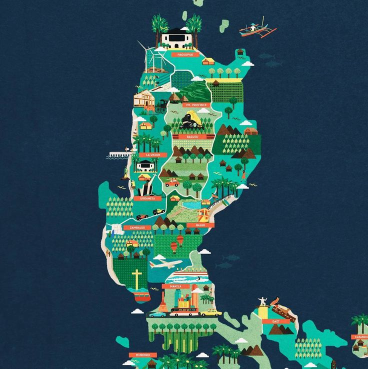

About Me & My City
I'm Charles Nephi Salva. I'm 22 years old and I'm from the Philippines. I just got married last year and I've started my first certificate around the same time. I love music, playing video games, and watching anime, movies, and series. I'm currently working as a mentor and a planning agent in BYU-Pathway Worldwide so I could say I've been blessed both ways by this institution. I want to be a programmer and venture on this career field to create and develop meaningful software that could help me get to the life I envision for me and my family.
Pasig City is located in Metro Manila, Philippines. It’s known for being a business hub, especially with the Ortigas Center, which is filled with offices, malls, and restaurants. The city is also rich in history, with places like the Pasig Cathedral and the Pasig River. Over the years, Pasig has grown quickly, becoming a lively and modern place to live and work, while also focusing on improving public services and green spaces.
Web Dev Resources
- MDN Web Docs - Comprehensive web documentation.
- W3Schools - Beginner-friendly tutorials.
- freeCodeCamp - Hands-on coding lessons.
- Stack Overflow - Q&A for developers.
- Udemy Web Development Courses - Paid and free courses.
- Developer Roadmaps - Interactive roadmaps.
- CodePen - Online coding playground.
- GitHub - Version control and open-source projects.